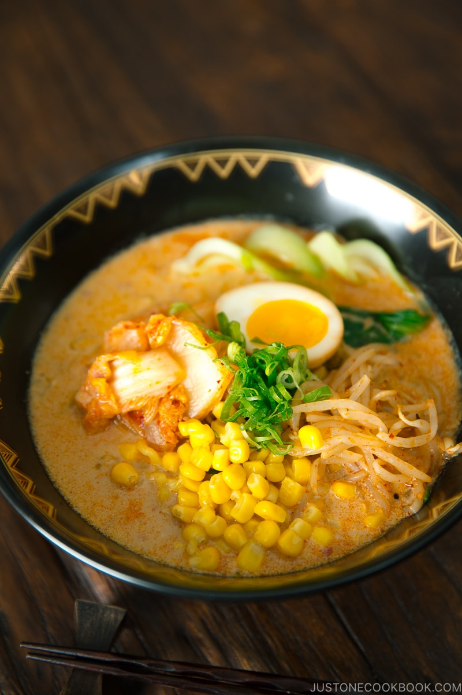

Vegetarian Ramen

Description
Is it possible to create a pot of vegetarian ramen broth that rivals the ones that have gone through long simmering of meat bones, cartilage, and fat at all?
This recipe teaches you how to use some flavorful ingredients to make umami-rich vegetarian ramen that you’d never guess was devoid of meat.
Ingredients:
- Toppings: Blanched Shanghai bok choy, Ramen Eggs (skip for vegan), vegan kimchi, sweet corn, Spicy Bean Sprout Salad
- Fresh ramen noodles
- Unsweetened soy milk
- Vegan dashi
- Soy Sauce
- Aromatics including garlic, ginger, and scallions
Preparation:
- Make the cold brew vegan dashi by soaking kombu and dried shiitake mushrooms in water.
- Then, bring the cold brew dashi in a pot to almost a boil. Discard the kombu and mushrooms and set the dashi aside.
- n a separate saucepan, cook the aromatics with sesame oil and add all the condiments, prepared vegan dashi, and soy milk.
- Cook the Shanghai bok choy and fresh ramen noodles.
- Assemble each ramen bowl with the noodles, soup, and toppings. Serve hot!